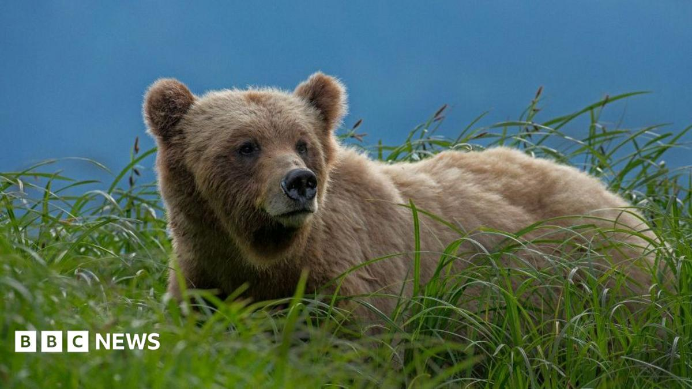

World · 05 Nov 2026
Mother and daughter die after suspected grizzly bear attack in Canada

Authorities in British Columbia say evidence suggests an animal may have been involved in the women's deaths.
Multiple independent publishers are reporting on the same development: Mother and daughter die after suspected grizzly bear attack in Canada.
The available reports place the development in the World category. The accounts were compared for agreement on the central event rather than simply shared names or broad topics.
One of the available reports describes the development this way: Authorities in British Columbia say evidence suggests an animal may have been involved in the women's deaths.
Readers should consult the linked source reports for additional context, updates and details that may change as the story develops.
Sources
This article was produced by the C. O. Eric AI Newsroom from the cited sources. It is published only after automated evidence and safety checks.